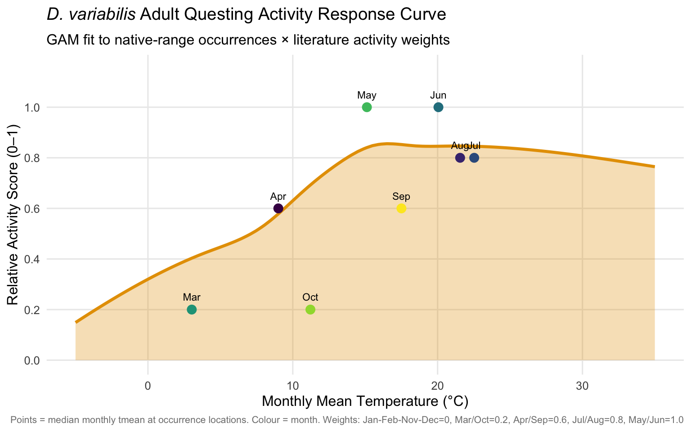
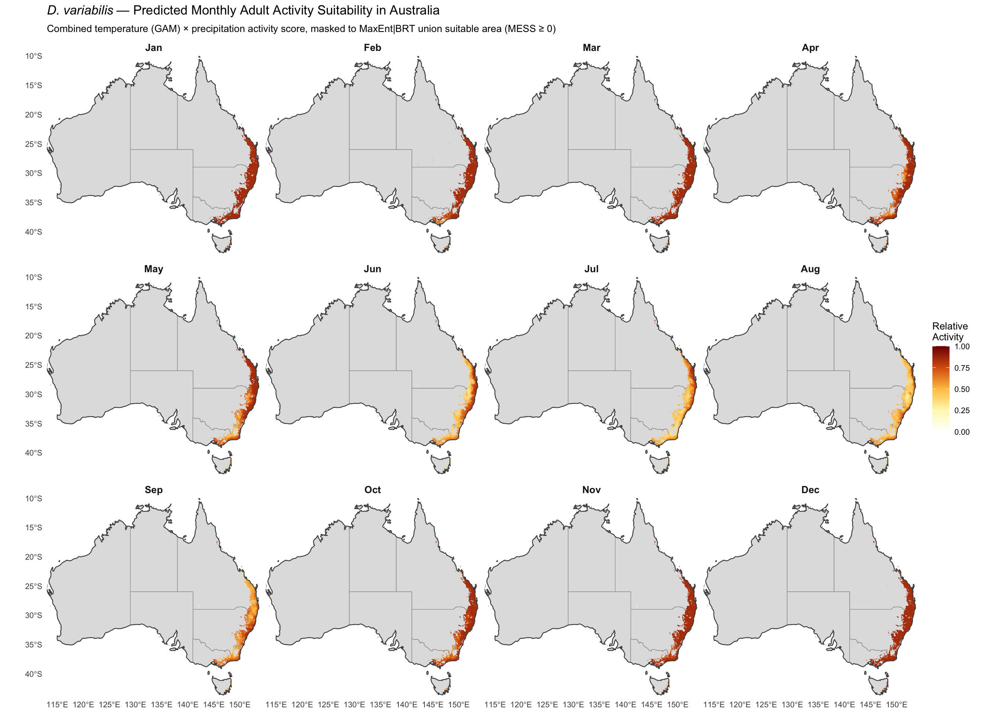
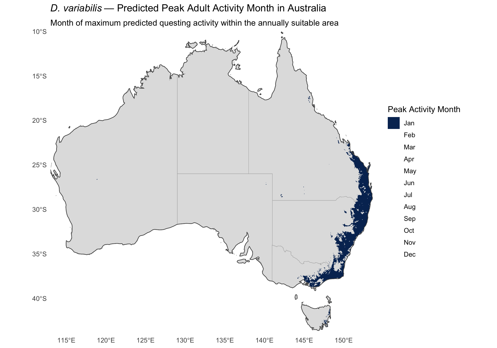
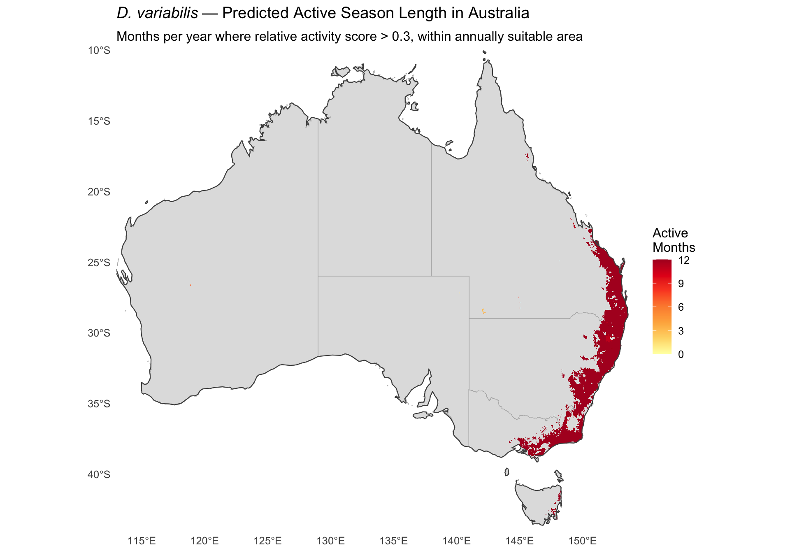
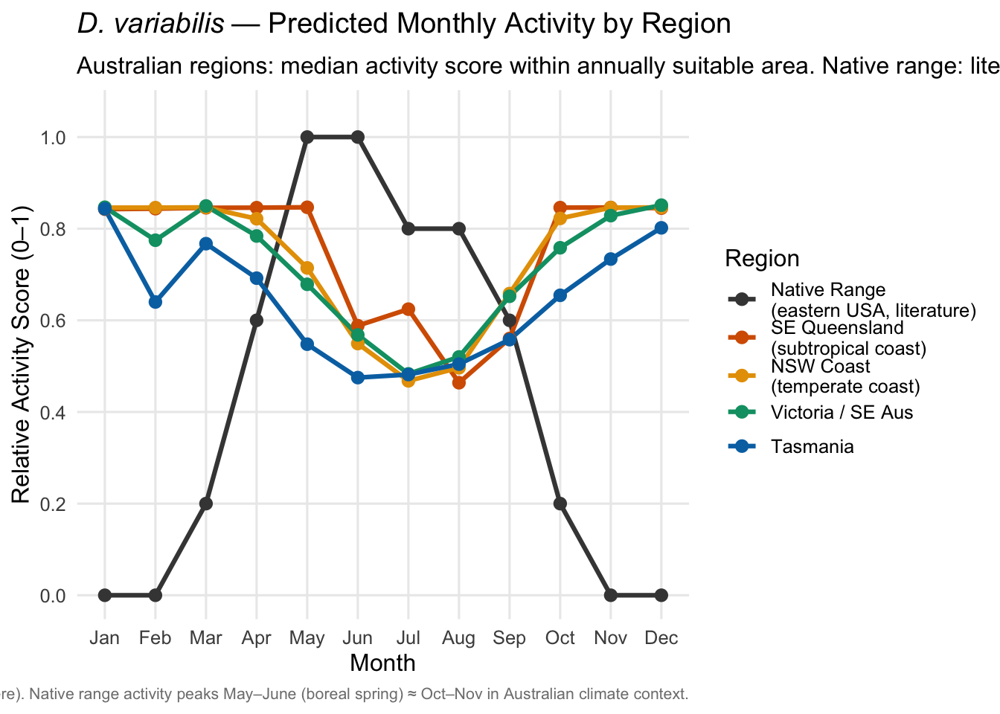
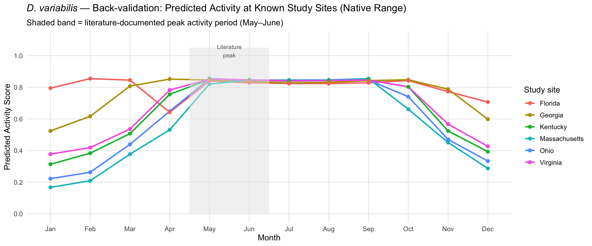

library(tidyverse)
library(terra)
library(sf)
library(mgcv)
library(rnaturalearth)
library(rnaturalearthdata)
library(patchwork)Step 10: Seasonal Activity Projection for Australia
Dermacentor variabilis Species Distribution Model
Overview
The annual MaxEnt and BRT models (Steps 5–7) identify where in Australia D. variabilis could establish climatically. This script answers when — predicting which months of the year adult questing activity would be expected in climatically suitable Australian regions, and mapping the peak activity window.
Approach: Climate-matching seasonal activity model
We cannot project the annual MaxEnt/BRT models per-month (their predictors are annual aggregates). Instead, we:
- Derive an empirical activity ~ monthly mean temperature response from native-range occurrence points weighted by literature-documented monthly activity intensity
- Derive a secondary precipitation weight (drought suppression filter) from the same data
- Project both to Australian monthly WorldClim rasters to produce 12 monthly activity layers
- Mask to the union of MaxEnt and BRT annual suitability zones, with MESS novel-climate masking applied
Native-range phenology (from literature):
| Region | Active months | Peak |
|---|---|---|
| Massachusetts/Nova Scotia | April–August | May–June |
| Virginia/Ohio | April–September | May–July |
| Kentucky | March–October | May–June |
| Georgia | Late March–August | May–June |
| Florida | April–July | May–June |
Note: All peaks correspond to late boreal spring/early summer. In the southern hemisphere, the climatologically equivalent window is October–December, but the exact Australian peak months are determined by the climate-matching, not a fixed calendar offset.
1. Project paths
base_dir <- "~/Library/CloudStorage/OneDrive-CSIRO/OneDrive - Docs/01_Projects/SDM/Dvariabilis_SDM"
processed_dir <- file.path(base_dir, "processed_data")
figures_dir <- file.path(base_dir, "figures")
wc_dir <- file.path(base_dir, "climatic_data", "wc2.1_2.5m")
# Literature-based monthly activity weights (adults)
# Based on Goddard 1996, Campbell 1979, Sonenshine & Stout 1971,
# Conlon & Rockett 1982, Newhouse 1983, McEnroe 1979a/b, Burg 2001
activity_weights <- c(
Jan = 0.0, Feb = 0.0, Mar = 0.2, Apr = 0.6,
May = 1.0, Jun = 1.0, Jul = 0.8, Aug = 0.8,
Sep = 0.6, Oct = 0.2, Nov = 0.0, Dec = 0.0
)
month_names <- names(activity_weights)
cat("Monthly activity weights (adults, N. hemisphere):\n")
print(activity_weights)Monthly activity weights (adults, N. hemisphere):
Jan Feb Mar Apr May Jun Jul Aug Sep Oct Nov Dec
0.0 0.0 0.2 0.6 1.0 1.0 0.8 0.8 0.6 0.2 0.0 0.0 2. Load data
# Thinned occurrences (native range)
occ <- readRDS(file.path(processed_dir, "occurrences_thinned.rds"))
sprintf("Loaded %d thinned occurrences", nrow(occ))
# Annual suitability predictions for Australia
pred_maxent <- rast(file.path(processed_dir, "pred_aus_maxent.tif"))
pred_brt <- rast(file.path(processed_dir, "pred_aus_brt.tif"))
# Thresholds
thresholds <- readRDS(file.path(processed_dir, "model_thresholds.rds"))
thresh_maxent <- thresholds$maxent$maxss
thresh_brt <- thresholds$brt$maxss
sprintf("MaxEnt MaxSS threshold: %.3f | BRT MaxSS threshold: %.3f",
thresh_maxent, thresh_brt)
# MESS raster (novel climate mask)
mess_aus <- rast(file.path(processed_dir, "mess_australia.tif"))
# Australia extent reference (use env_selected_aus for cropping)
aus_ref <- rast(file.path(processed_dir, "env_selected_aus.tif"))
aus_ext <- ext(aus_ref)[1] "Loaded 4580 thinned occurrences"
[1] "MaxEnt MaxSS threshold: 0.499 | BRT MaxSS threshold: 0.521"3. Extract monthly climate at occurrence points
For each occurrence point, extract monthly mean temperature (tmean = (tmin + tmax) / 2) and monthly precipitation for all 12 months.
# Load monthly tmin, tmax, prec rasters (global extent — occurrence points are in N. America)
tmin_stack <- rast(file.path(wc_dir, sprintf("wc2.1_2.5m_tmin_%02d.tif", 1:12)))
tmax_stack <- rast(file.path(wc_dir, sprintf("wc2.1_2.5m_tmax_%02d.tif", 1:12)))
prec_stack <- rast(file.path(wc_dir, sprintf("wc2.1_2.5m_prec_%02d.tif", 1:12)))
names(tmin_stack) <- paste0("tmin_", sprintf("%02d", 1:12))
names(tmax_stack) <- paste0("tmax_", sprintf("%02d", 1:12))
names(prec_stack) <- paste0("prec_", sprintf("%02d", 1:12))
# Extract at occurrence points
occ_coords <- occ[, c("decimalLongitude", "decimalLatitude")]
occ_tmin <- terra::extract(tmin_stack, occ_coords)[, -1]
occ_tmax <- terra::extract(tmax_stack, occ_coords)[, -1]
occ_prec <- terra::extract(prec_stack, occ_coords)[, -1]
# Compute tmean
occ_tmean <- (occ_tmin + occ_tmax) / 2
names(occ_tmean) <- paste0("tmean_", sprintf("%02d", 1:12))
names(occ_prec) <- paste0("prec_", sprintf("%02d", 1:12))
sprintf("Extracted monthly climate at %d occurrence points x 12 months", nrow(occ_tmean))[1] "Extracted monthly climate at 4580 occurrence points x 12 months"4. Build weighted activity dataset
Create one row per (occurrence × month) observation. Each row gets the literature activity weight for that month. Only months with weight > 0 are retained for GAM fitting, but zero-weight anchor points are added at temperature extremes to ensure the curve returns to zero.
# Build long-format data frame: occurrence × month
activity_df <- map_dfr(1:12, function(m) {
tibble(
occ_id = seq_len(nrow(occ_tmean)),
month = m,
month_name = month_names[m],
tmean = occ_tmean[[m]],
prec = occ_prec[[m]],
act_weight = activity_weights[m]
)
}) %>%
filter(!is.na(tmean), !is.na(prec)) %>%
# Keep only months with some activity (weights > 0) for GAM fitting
# Plus add extreme anchor points separately
filter(act_weight > 0)
cat(sprintf(
"Activity data: %d (occurrence × active-month) observations\n",
nrow(activity_df)
))
# Summary of tmean by month
activity_df %>%
group_by(month_name, month, act_weight) %>%
summarise(
n = n(),
tmean_mean = round(mean(tmean), 1),
tmean_range = sprintf("%.1f – %.1f", min(tmean), max(tmean)),
.groups = "drop"
) %>%
arrange(month) %>%
print()Activity data: 36640 (occurrence × active-month) observations
# A tibble: 8 × 6
month_name month act_weight n tmean_mean tmean_range
<chr> <int> <dbl> <int> <dbl> <chr>
1 Mar 3 0.2 4580 3.5 -11.8 – 21.6
2 Apr 4 0.6 4580 9.6 -1.1 – 24.5
3 May 5 1 4580 15.4 6.6 – 27.6
4 Jun 6 1 4580 20.2 11.4 – 29.9
5 Jul 7 0.8 4580 22.7 15.7 – 30.8
6 Aug 8 0.8 4580 21.9 15.0 – 30.7
7 Sep 9 0.6 4580 17.8 9.2 – 28.1
8 Oct 10 0.2 4580 11.6 2.4 – 26.0 5. Fit activity response curve: activity ~ tmean (GAM)
We fit a GAM through the weighted (occurrence × month) data. Each point has y = activity_weight[month] and weight = activity_weight. This produces a smooth empirical curve of expected activity as a function of monthly mean temperature.
Zero-activity anchor points are added at low (~-5°C) and high (>32°C) temperatures to prevent the GAM from predicting high activity in temperature ranges that are never associated with activity in the native range.
# Add anchor points to ensure curve reaches zero at temperature extremes
anchors <- tibble(
occ_id = NA_integer_,
month = NA_integer_,
month_name = NA_character_,
tmean = c(-5, -3, 31, 33, 35), # cold and hot extremes
prec = 50,
act_weight = 0
)
gam_data <- bind_rows(activity_df, anchors)
# Fit GAM: activity weight ~ smooth(tmean)
# Weights: activity_weight (so peak months drive the curve more)
# Add small epsilon to avoid weight = 0 issues with anchor points
gam_data <- gam_data %>%
mutate(fit_weight = pmax(act_weight, 0.01))
activity_gam <- gam(
act_weight ~ s(tmean, bs = "cr", k = 10),
data = gam_data,
weights = fit_weight,
family = gaussian()
)
cat("GAM summary:\n")
print(summary(activity_gam))
# Build prediction function via approxfun lookup to avoid mgcv scoping issues
# inside terra::app (predict.gam's eval(predvars, data, env) fails there)
temp_seq <- seq(-15, 45, by = 0.5)
act_seq <- pmin(pmax(as.numeric(
predict(activity_gam, newdata = data.frame(tmean = temp_seq))
), 0), 1)
activity_lookup <- approxfun(temp_seq, act_seq, rule = 2)
predict_activity <- function(tmean_vals) activity_lookup(tmean_vals)
# Verify: activity should peak around 15–22°C
test_temps <- seq(-5, 35, by = 1)
test_preds <- predict_activity(test_temps)
peak_temp <- test_temps[which.max(test_preds)]
sprintf("Fitted curve peak temperature: %.0f°C (expected: 15–22°C)", peak_temp)GAM summary:
Family: gaussian
Link function: identity
Formula:
act_weight ~ s(tmean, bs = "cr", k = 10)
Parametric coefficients:
Estimate Std. Error t value Pr(>|t|)
(Intercept) 0.734372 0.001058 694.2 <2e-16 ***
---
Signif. codes: 0 '***' 0.001 '**' 0.01 '*' 0.05 '.' 0.1 ' ' 1
Approximate significance of smooth terms:
edf Ref.df F p-value
s(tmean) 8.577 8.938 1930 <2e-16 ***
---
Signif. codes: 0 '***' 0.001 '**' 0.01 '*' 0.05 '.' 0.1 ' ' 1
R-sq.(adj) = 0.304 Deviance explained = 32%
GCV = 0.023019 Scale est. = 0.023013 n = 36645
[1] "Fitted curve peak temperature: 17°C (expected: 15–22°C)"6. Plot activity response curve
# Generate smooth curve
curve_df <- tibble(
tmean = seq(-5, 35, length.out = 200),
activity = predict_activity(tmean)
)
# Native-range monthly tmean medians (for reference points)
ref_points <- activity_df %>%
group_by(month, month_name, act_weight) %>%
summarise(tmean_median = median(tmean), .groups = "drop") %>%
arrange(month)
p_gam <- ggplot(curve_df, aes(x = tmean, y = activity)) +
geom_ribbon(
data = curve_df,
aes(ymin = 0, ymax = activity),
fill = "#E69F00", alpha = 0.3
) +
geom_line(colour = "#E69F00", linewidth = 1.2) +
geom_point(
data = ref_points,
aes(x = tmean_median, y = act_weight, colour = month_name),
size = 3.5, shape = 16
) +
geom_text(
data = ref_points,
aes(x = tmean_median, y = act_weight + 0.05, label = month_name),
size = 3, hjust = 0.5
) +
scale_colour_viridis_d(guide = "none") +
scale_y_continuous(limits = c(0, 1.15), breaks = seq(0, 1, 0.2)) +
labs(
title = expression(italic("D. variabilis") ~
"Adult Questing Activity Response Curve"),
subtitle = "GAM fit to native-range occurrences × literature activity weights",
x = "Monthly Mean Temperature (°C)",
y = "Relative Activity Score (0–1)",
caption = paste(
"Points = median monthly tmean at occurrence locations.",
"Colour = month. Weights: Jan-Feb-Nov-Dec=0, Mar/Oct=0.2,",
"Apr/Sep=0.6, Jul/Aug=0.8, May/Jun=1.0"
)
) +
theme_minimal(base_size = 12) +
theme(
panel.grid.minor = element_blank(),
plot.title = element_text(face = "bold"),
plot.caption = element_text(size = 8, colour = "grey50")
)
p_gam
ggsave(
file.path(figures_dir, "10_activity_response_curve.png"),
plot = p_gam, width = 8, height = 5, dpi = 300
)7. Derive precipitation drought threshold
From occurrence points during active months, the 5th percentile of monthly precipitation defines the drought suppression threshold — below this, activity is down-weighted linearly to zero.
prec_active <- activity_df %>%
filter(act_weight >= 0.6) %>% # Use peak-activity months only (May/Jun/Jul/Aug/Apr/Sep)
pull(prec)
prec_threshold <- quantile(prec_active, probs = 0.05, na.rm = TRUE)
sprintf(
"Precipitation drought threshold (5th percentile, active months): %.1f mm/month",
prec_threshold
)
sprintf(
"Precipitation range at active occurrences: %.1f – %.1f mm/month",
min(prec_active, na.rm = TRUE), max(prec_active, na.rm = TRUE)
)
# Precipitation weight function
prec_weight_fn <- function(prec_vals) {
pmin(1, prec_vals / prec_threshold)
}[1] "Precipitation drought threshold (5th percentile, active months): 58.0 mm/month"
[1] "Precipitation range at active occurrences: 19.0 – 259.0 mm/month"8. Load and crop Australian monthly climate
# Crop monthly WorldClim to Australian extent
tmin_aus <- crop(tmin_stack, aus_ext)
tmax_aus <- crop(tmax_stack, aus_ext)
prec_aus <- crop(prec_stack, aus_ext)
# Compute monthly tmean for Australia
tmean_aus <- (tmin_aus + tmax_aus) / 2
names(tmean_aus) <- paste0("tmean_", sprintf("%02d", 1:12))
names(prec_aus) <- paste0("prec_", sprintf("%02d", 1:12))
sprintf(
"Australian monthly climate loaded: %d x %d cells, %d layers",
nrow(tmean_aus), ncol(tmean_aus), nlyr(tmean_aus)
)[1] "Australian monthly climate loaded: 1073 x 1105 cells, 12 layers"9. Project monthly activity to Australia
For each month, apply: 1. Temperature activity score from GAM 2. Precipitation weight (drought suppression) 3. Combined activity = temperature score × precipitation weight
monthly_activity_list <- vector("list", 12)
for (m in 1:12) {
# Temperature-based activity
tmean_m <- tmean_aus[[m]]
act_temp <- app(tmean_m, fun = predict_activity)
# Precipitation weight
prec_m <- prec_aus[[m]]
act_prec <- app(prec_m, fun = prec_weight_fn)
# Combined
monthly_activity_list[[m]] <- act_temp * act_prec
names(monthly_activity_list[[m]]) <- month.abb[m]
}
# Stack into a 12-layer raster
monthly_activity_aus <- rast(monthly_activity_list)
names(monthly_activity_aus) <- month.abb
sprintf(
"Monthly activity raster: %d layers, range per layer:",
nlyr(monthly_activity_aus)
)
for (m in 1:12) {
r <- global(monthly_activity_aus[[m]], fun = "range", na.rm = TRUE)
cat(sprintf(" %s: %.3f – %.3f\n", month.abb[m], r[1, 1], r[1, 2]))
}[1] "Monthly activity raster: 12 layers, range per layer:"
Jan: 0.015 – 0.856
Feb: 0.014 – 0.856
Mar: 0.072 – 0.856
Apr: 0.029 – 0.856
May: 0.000 – 0.856
Jun: 0.000 – 0.856
Jul: 0.000 – 0.856
Aug: 0.000 – 0.856
Sep: 0.000 – 0.856
Oct: 0.000 – 0.856
Nov: 0.000 – 0.856
Dec: 0.000 – 0.85610. Build the annual suitability mask
Union of MaxEnt and BRT binary predictions, plus MESS novel-climate masking.
# Binary suitability (MaxSS threshold)
suit_maxent <- ifel(pred_maxent >= thresh_maxent, 1, 0)
suit_brt <- ifel(pred_brt >= thresh_brt, 1, 0)
# Union: suitable if either model predicts suitable
suit_union <- ifel(suit_maxent == 1 | suit_brt == 1, 1, NA)
# MESS mask: set novel climate cells (MESS < 0) to NA
# Resample MESS to match monthly raster resolution if needed
mess_match <- resample(mess_aus, monthly_activity_aus[[1]], method = "bilinear")
mess_mask <- ifel(mess_match >= 0, 1, NA)
# Combined mask: union suitability AND MESS >= 0
final_mask <- suit_union * mess_mask # NA propagates where either is NA
# Report masking
n_total <- sum(!is.na(values(suit_union)))
n_suit <- sum(values(suit_union) == 1, na.rm = TRUE)
n_mess_ok <- sum(values(mess_mask) == 1, na.rm = TRUE)
n_final <- sum(values(final_mask) == 1, na.rm = TRUE)
cat("--- Masking Summary ---\n")
sprintf("Total Australian cells: %d", n_total)
sprintf("Suitable (MaxEnt | BRT union): %d (%.1f%%)", n_suit, 100 * n_suit / n_total)
sprintf("MESS >= 0 (non-novel climate): %d (%.1f%%)", n_mess_ok, 100 * n_mess_ok / n_total)
sprintf("Final mask (suitable & non-novel): %d (%.1f%%)", n_final, 100 * n_final / n_total)--- Masking Summary ---
[1] "Total Australian cells: 13843"
[1] "Suitable (MaxEnt | BRT union): 13843 (100.0%)"
[1] "MESS >= 0 (non-novel climate): 232937 (1682.7%)"
[1] "Final mask (suitable & non-novel): 13838 (100.0%)"11. Apply mask to monthly activity rasters
monthly_masked <- monthly_activity_aus * final_mask
names(monthly_masked) <- month.abb
# Zero activity outside mask (not NA, so we can still see the geography)
# Leave as NA — more conservative and avoids confusion with low genuine activity
sprintf("Masked monthly activity raster: %d layers", nlyr(monthly_masked))[1] "Masked monthly activity raster: 12 layers"12. Derive summary rasters
# Peak activity month (1–12)
peak_month <- which.lyr(monthly_masked)
names(peak_month) <- "peak_month"
# Active window: count months where activity > 0.3
active_window <- app(monthly_masked, fun = function(x) sum(x > 0.3, na.rm = TRUE))
names(active_window) <- "active_months"
# Max activity score (across the year)
max_activity <- app(monthly_masked, fun = function(x) max(x, na.rm = TRUE))
names(max_activity) <- "max_activity"
# Replace 0 with NA where mask is NA
peak_month <- mask(peak_month, final_mask)
active_window <- mask(active_window, final_mask)
cat("Peak activity month summary:\n")
peak_tbl <- as.data.frame(table(values(peak_month))) %>%
rename(month_num = Var1, n_cells = Freq) %>%
mutate(
month_name = month.abb[as.integer(as.character(month_num))],
pct = round(100 * n_cells / sum(n_cells), 1)
) %>%
arrange(as.integer(as.character(month_num)))
print(peak_tbl)Peak activity month summary:
month_num n_cells month_name pct
1 1 13838 Jan 10013. 12-panel monthly activity map
world_sf <- ne_countries(scale = "medium", returnclass = "sf")
aus_sf <- ne_countries(country = "Australia", scale = "medium", returnclass = "sf")
aus_states <- ne_states(country = "Australia", returnclass = "sf")
# Convert to data frame for ggplot
monthly_df <- as.data.frame(monthly_masked, xy = TRUE) %>%
pivot_longer(cols = all_of(month.abb), names_to = "month", values_to = "activity") %>%
filter(!is.na(activity)) %>%
mutate(month = factor(month, levels = month.abb))
p_facet <- ggplot() +
geom_sf(data = aus_sf, fill = "grey88", colour = "grey50", linewidth = 0.3) +
geom_sf(data = aus_states, fill = NA, colour = "grey60", linewidth = 0.2) +
geom_raster(
data = monthly_df,
aes(x = x, y = y, fill = activity)
) +
geom_sf(data = aus_sf, fill = NA, colour = "grey30", linewidth = 0.4) +
scale_fill_gradientn(
colours = c("white", "#FFF7BC", "#FEC44F", "#D95F0E", "#7F0000"),
limits = c(0, 1),
name = "Relative\nActivity",
na.value = NA
) +
facet_wrap(~month, ncol = 4) +
coord_sf(
xlim = c(113, 154),
ylim = c(-44, -10),
expand = FALSE
) +
labs(
title = expression(italic("D. variabilis") ~
"— Predicted Monthly Adult Activity Suitability in Australia"),
subtitle = paste(
"Combined temperature (GAM) × precipitation activity score,",
"masked to MaxEnt|BRT union suitable area (MESS ≥ 0)"
),
x = NULL, y = NULL
) +
theme_minimal(base_size = 10) +
theme(
panel.grid = element_blank(),
strip.text = element_text(face = "bold", size = 10),
plot.title = element_text(face = "bold", size = 13),
legend.position = "right"
)
p_facet
ggsave(
file.path(figures_dir, "10_monthly_activity_facets.png"),
plot = p_facet, width = 14, height = 10, dpi = 300
)14. Peak activity month map
# Custom colour palette for months (spring/summer in southern hemisphere = Aug–Feb)
month_colours <- setNames(
c(
"#053061", # Jan (deep blue — midsummer)
"#2166AC", # Feb
"#4393C3", # Mar
"#92C5DE", # Apr (late summer)
"#D1E5F0", # May (autumn)
"#F7F7F7", # Jun (winter — not expected to be peak)
"#FDDBC7", # Jul (winter)
"#F4A582", # Aug (late winter/spring start)
"#D6604D", # Sep
"#B2182B", # Oct (spring peak expected)
"#67001F", # Nov (peak spring/early summer)
"#3B0010" # Dec (midsummer — possible in far south)
),
month.abb
)
peak_df <- as.data.frame(peak_month, xy = TRUE) %>%
filter(!is.na(peak_month)) %>%
mutate(
month_name = factor(month.abb[peak_month], levels = month.abb)
)
p_peak <- ggplot() +
geom_sf(data = aus_sf, fill = "grey88", colour = "grey50", linewidth = 0.3) +
geom_sf(data = aus_states, fill = NA, colour = "grey70", linewidth = 0.2) +
geom_raster(data = peak_df, aes(x = x, y = y, fill = month_name)) +
geom_sf(data = aus_sf, fill = NA, colour = "grey30", linewidth = 0.4) +
scale_fill_manual(
values = month_colours,
name = "Peak Activity Month",
drop = FALSE
) +
coord_sf(xlim = c(113, 154), ylim = c(-44, -10), expand = FALSE) +
labs(
title = expression(italic("D. variabilis") ~
"— Predicted Peak Adult Activity Month in Australia"),
subtitle = "Month of maximum predicted questing activity within the annually suitable area",
x = NULL, y = NULL
) +
theme_minimal(base_size = 12) +
theme(
panel.grid = element_blank(),
plot.title = element_text(face = "bold"),
legend.position = "right"
)
p_peak
ggsave(
file.path(figures_dir, "10_peak_activity_month.png"),
plot = p_peak, width = 10, height = 7, dpi = 300
)15. Active season length map
active_df <- as.data.frame(active_window, xy = TRUE) %>%
filter(!is.na(active_months))
p_window <- ggplot() +
geom_sf(data = aus_sf, fill = "grey88", colour = "grey50", linewidth = 0.3) +
geom_sf(data = aus_states, fill = NA, colour = "grey70", linewidth = 0.2) +
geom_raster(data = active_df, aes(x = x, y = y, fill = active_months)) +
geom_sf(data = aus_sf, fill = NA, colour = "grey30", linewidth = 0.4) +
scale_fill_distiller(
palette = "YlOrRd",
direction = 1,
name = "Active\nMonths",
limits = c(0, 12),
breaks = c(0, 3, 6, 9, 12)
) +
coord_sf(xlim = c(113, 154), ylim = c(-44, -10), expand = FALSE) +
labs(
title = expression(italic("D. variabilis") ~
"— Predicted Active Season Length in Australia"),
subtitle = "Months per year where relative activity score > 0.3, within annually suitable area",
x = NULL, y = NULL
) +
theme_minimal(base_size = 12) +
theme(
panel.grid = element_blank(),
plot.title = element_text(face = "bold"),
legend.position = "right"
)
p_window
ggsave(
file.path(figures_dir, "10_active_window_length.png"),
plot = p_window, width = 10, height = 7, dpi = 300
)16. Regional phenology time series
Extract the monthly activity profile for key Australian regions and compare against the known native-range phenology pattern.
# Define Australian regions (lon_min, lon_max, lat_min, lat_max)
aus_regions <- list(
"SE Queensland\n(subtropical coast)" = c(150, 154, -30, -25),
"NSW Coast\n(temperate coast)" = c(149, 154, -36, -30),
"Victoria / SE Aus" = c(144, 150, -39, -36),
"Tasmania" = c(145, 149, -43, -41),
"SW Western Australia" = c(114, 118, -35, -30)
)
# Native-range reference phenology (monthly activity weights = literature)
native_ref <- tibble(
month = factor(month.abb, levels = month.abb),
month_n = 1:12,
activity = activity_weights,
region = "Native Range\n(eastern USA, literature)"
)
# Extract monthly activity for each Australian region
regional_data <- map_dfr(names(aus_regions), function(region_name) {
bbox <- aus_regions[[region_name]]
region_ext <- ext(bbox[1], bbox[2], bbox[3], bbox[4])
region_stack <- crop(monthly_masked, region_ext)
monthly_vals <- map_dfr(1:12, function(m) {
vals <- values(region_stack[[m]], na.rm = TRUE)
if (length(vals) == 0) {
return(tibble(month_n = m, activity = NA_real_))
}
tibble(month_n = m, activity = median(vals, na.rm = TRUE))
})
monthly_vals %>%
mutate(
region = region_name,
month = factor(month.abb[month_n], levels = month.abb)
)
})
# Combine with native reference
plot_data <- bind_rows(
native_ref %>% mutate(month_n = as.integer(month)),
regional_data
) %>%
filter(!is.na(activity))
# Assign region order
region_order <- c(
"Native Range\n(eastern USA, literature)",
names(aus_regions)
)
plot_data <- plot_data %>%
mutate(region = factor(region, levels = region_order))
# Region colours
region_colours <- c(
"Native Range\n(eastern USA, literature)" = "#444444",
"SE Queensland\n(subtropical coast)" = "#D55E00",
"NSW Coast\n(temperate coast)" = "#E69F00",
"Victoria / SE Aus" = "#009E73",
"Tasmania" = "#0072B2",
"SW Western Australia" = "#CC79A7"
)
p_phenology <- ggplot(plot_data, aes(x = month_n, y = activity,
colour = region, group = region)) +
geom_line(linewidth = 1.1) +
geom_point(size = 2.5) +
scale_x_continuous(
breaks = 1:12,
labels = month.abb
) +
scale_colour_manual(values = region_colours, name = "Region") +
scale_y_continuous(limits = c(0, 1.05), breaks = seq(0, 1, 0.2)) +
labs(
title = expression(italic("D. variabilis") ~
"— Predicted Monthly Activity by Region"),
subtitle = paste(
"Australian regions: median activity score within annually suitable area.",
"Native range: literature-derived weights (N. hemisphere calendar)."
),
x = "Month",
y = "Relative Activity Score (0–1)",
caption = paste(
"Note: Australian months are absolute calendar months (southern hemisphere).",
"Native range activity peaks May–June (boreal spring) ≈",
"Oct–Nov in Australian climate context."
)
) +
theme_minimal(base_size = 12) +
theme(
panel.grid.minor = element_blank(),
plot.title = element_text(face = "bold"),
plot.caption = element_text(size = 8, colour = "grey50"),
legend.position = "right"
)
p_phenology
ggsave(
file.path(figures_dir, "10_regional_phenology.png"),
plot = p_phenology, width = 11, height = 6, dpi = 300
)17. Native-range back-validation
Apply the fitted activity function to monthly WorldClim rasters for the native range to verify that the model correctly identifies May–June as peak months at known study sites. This is a key sanity check.
# Known study sites from literature (lon, lat, known peak months)
study_sites <- tibble(
site = c("Massachusetts", "Virginia", "Ohio", "Kentucky", "Georgia", "Florida"),
lon = c(-72.5, -79.0, -82.9, -84.5, -83.4, -81.5),
lat = c(42.2, 37.5, 40.1, 38.0, 32.5, 27.9),
lit_peak = c("May-Jun", "May, Jul", "May-Jun", "May-Jun", "May-Jun", "May-Jun"),
lit_active = c("Apr-Aug", "Apr-Sep", "Apr-Sep", "Mar-Oct", "Mar-Aug", "Apr-Jul")
)
# Crop monthly climate to native range extent
native_ext <- ext(-100, -60, 25, 55)
tmin_nat <- crop(tmin_stack, native_ext)
tmax_nat <- crop(tmax_stack, native_ext)
prec_nat <- crop(prec_stack, native_ext)
tmean_nat <- (tmin_nat + tmax_nat) / 2
names(tmean_nat) <- paste0("tmean_", sprintf("%02d", 1:12))
names(prec_nat) <- paste0("prec_", sprintf("%02d", 1:12))
# Apply activity model to native range
monthly_native_list <- vector("list", 12)
for (m in 1:12) {
act_temp <- app(tmean_nat[[m]], fun = predict_activity)
act_prec <- app(prec_nat[[m]], fun = prec_weight_fn)
monthly_native_list[[m]] <- act_temp * act_prec
names(monthly_native_list[[m]]) <- month.abb[m]
}
monthly_native <- rast(monthly_native_list)
# Extract at study sites
site_coords <- study_sites[, c("lon", "lat")]
site_vals <- terra::extract(monthly_native, site_coords)[, -1]
names(site_vals) <- month.abb
# Find predicted peak month for each site
study_sites$pred_peak_month <- month.abb[apply(site_vals, 1, which.max)]
cat("Back-validation — predicted vs literature peak month:\n\n")
study_sites %>%
select(site, lat, lit_active, lit_peak, pred_peak_month) %>%
print()
# Plot study site phenology profiles
site_long <- bind_cols(study_sites[, "site"], site_vals) %>%
pivot_longer(cols = all_of(month.abb), names_to = "month", values_to = "activity") %>%
mutate(month = factor(month, levels = month.abb))Back-validation — predicted vs literature peak month:
# A tibble: 6 × 5
site lat lit_active lit_peak pred_peak_month
<chr> <dbl> <chr> <chr> <chr>
1 Massachusetts 42.2 Apr-Aug May-Jun Sep
2 Virginia 37.5 Apr-Sep May, Jul May
3 Ohio 40.1 Apr-Sep May-Jun May
4 Kentucky 38 Mar-Oct May-Jun May
5 Georgia 32.5 Mar-Aug May-Jun Apr
6 Florida 27.9 Apr-Jul May-Jun Feb p_validate <- ggplot(site_long, aes(x = month, y = activity, group = site, colour = site)) +
geom_line(linewidth = 1.0) +
geom_point(size = 2) +
annotate(
"rect",
xmin = 4.5, xmax = 6.5, ymin = 0, ymax = 1.05,
fill = "grey90", alpha = 0.5
) +
annotate(
"text", x = 5.5, y = 1.03, label = "Literature\npeak",
size = 3, colour = "grey40"
) +
scale_y_continuous(limits = c(0, 1.1), breaks = seq(0, 1, 0.2)) +
labs(
title = expression(italic("D. variabilis") ~
"— Back-validation: Predicted Activity at Known Study Sites (Native Range)"),
subtitle = "Shaded band = literature-documented peak activity period (May–June)",
x = "Month", y = "Predicted Activity Score",
colour = "Study site"
) +
theme_minimal(base_size = 12) +
theme(
panel.grid.minor = element_blank(),
plot.title = element_text(face = "bold"),
legend.position = "right"
)
p_validate
ggsave(
file.path(figures_dir, "10_backvalidation_native_range.png"),
plot = p_validate, width = 12, height = 5, dpi = 300
)18. Regional phenology summary table
# For each Australian region, find peak month and active window duration
regional_summary <- regional_data %>%
group_by(region) %>%
summarise(
peak_month = month.abb[which.max(activity)],
peak_activity = round(max(activity, na.rm = TRUE), 3),
months_above_0.3 = sum(activity > 0.3, na.rm = TRUE),
months_above_0.5 = sum(activity > 0.5, na.rm = TRUE),
active_months_str = paste(month.abb[activity > 0.3], collapse = ", "),
.groups = "drop"
) %>%
arrange(match(region, names(aus_regions)))
# Add native range row
native_summary <- tibble(
region = "Native Range (eastern USA, literature)",
peak_month = "May–Jun",
peak_activity = 1.0,
months_above_0.3 = sum(activity_weights > 0.3),
months_above_0.5 = sum(activity_weights > 0.5),
active_months_str = paste(names(activity_weights)[activity_weights > 0.3], collapse = ", ")
)
phenology_table <- bind_rows(native_summary, regional_summary)
cat("======================================================\n")
cat(" SEASONAL ACTIVITY SUMMARY\n")
cat("======================================================\n\n")
print(phenology_table, n = Inf, width = 120)
write_csv(phenology_table,
file.path(processed_dir, "regional_phenology_summary.csv"))======================================================
SEASONAL ACTIVITY SUMMARY
======================================================
# A tibble: 5 × 6
region peak_month peak_activity
<chr> <chr> <dbl>
1 "Native Range (eastern USA, literature)" May–Jun 1
2 "SE Queensland\n(subtropical coast)" May 0.847
3 "NSW Coast\n(temperate coast)" Mar 0.847
4 "Victoria / SE Aus" Dec 0.851
5 "Tasmania" Jan 0.843
months_above_0.3 months_above_0.5 active_months_str
<int> <int> <chr>
1 6 6 Apr, May, Jun, Jul, Aug, Sep
2 12 11 Jan, Feb, Mar, Apr, May, Jun, Jul, Aug, Sep…
3 12 10 Jan, Feb, Mar, Apr, May, Jun, Jul, Aug, Sep…
4 12 11 Jan, Feb, Mar, Apr, May, Jun, Jul, Aug, Sep…
5 12 10 Jan, Feb, Mar, Apr, May, Jun, Jul, Aug, Sep…19. Save outputs
# Monthly activity raster (12 layers, masked)
writeRaster(monthly_masked,
file.path(processed_dir, "monthly_activity_aus.tif"),
overwrite = TRUE)
# Peak activity month
writeRaster(peak_month,
file.path(processed_dir, "peak_activity_month_aus.tif"),
overwrite = TRUE)
# Active window length
writeRaster(active_window,
file.path(processed_dir, "active_window_length_aus.tif"),
overwrite = TRUE)
# Max activity score
writeRaster(max_activity,
file.path(processed_dir, "max_activity_aus.tif"),
overwrite = TRUE)
# GAM model and prediction function
saveRDS(activity_gam,
file.path(processed_dir, "activity_response_gam.rds"))
# Metadata
activity_metadata <- list(
activity_weights = activity_weights,
prec_threshold_mm = as.numeric(prec_threshold),
gam_peak_temp_C = peak_temp,
mask_type = "Union(MaxEnt, BRT) AND MESS >= 0",
thresh_maxent = thresh_maxent,
thresh_brt = thresh_brt,
n_suitable_cells = n_final
)
saveRDS(activity_metadata,
file.path(processed_dir, "seasonal_activity_metadata.rds"))
sprintf("Saved seasonal activity outputs to processed_data/ and figures/")[1] "Saved seasonal activity outputs to processed_data/ and figures/"